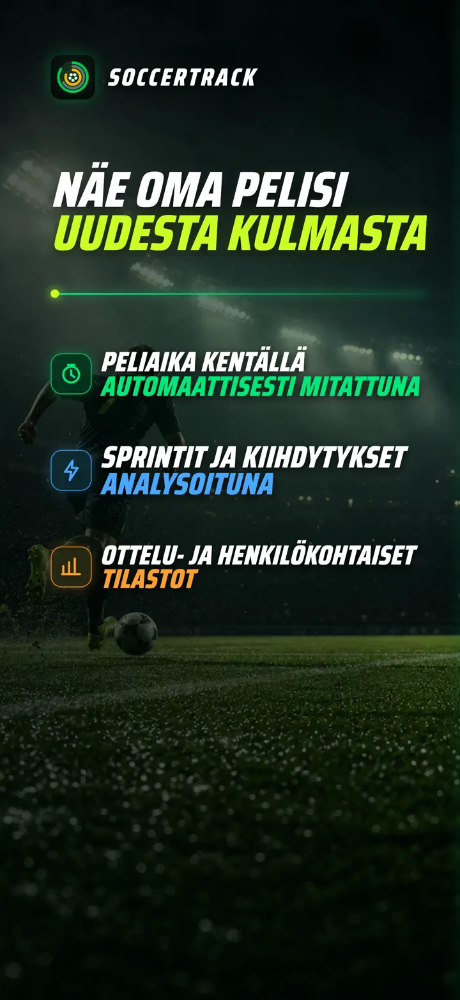
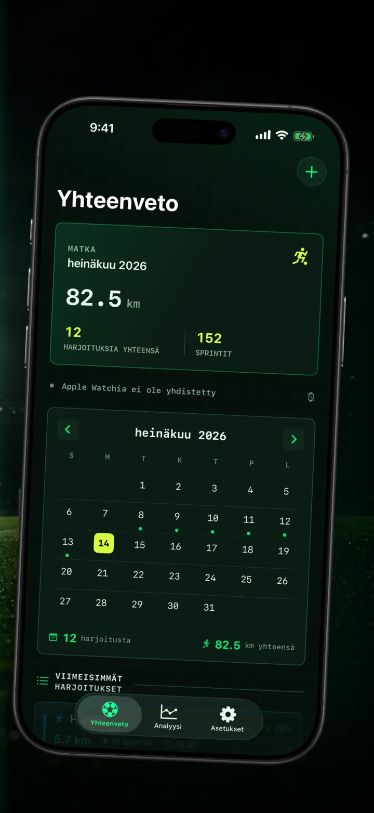
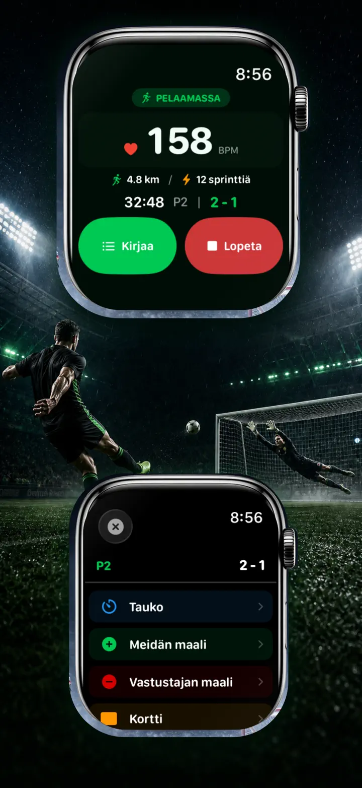
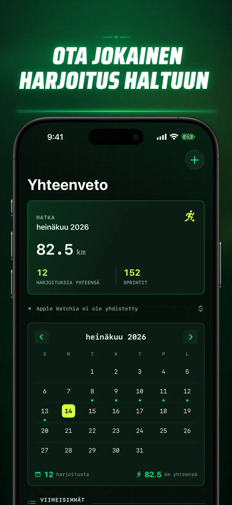
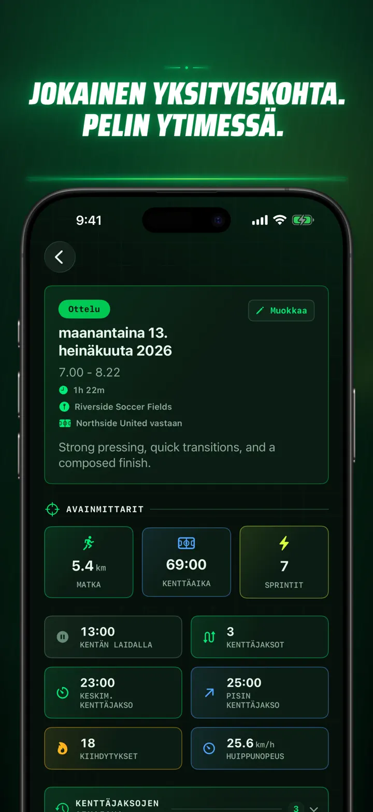
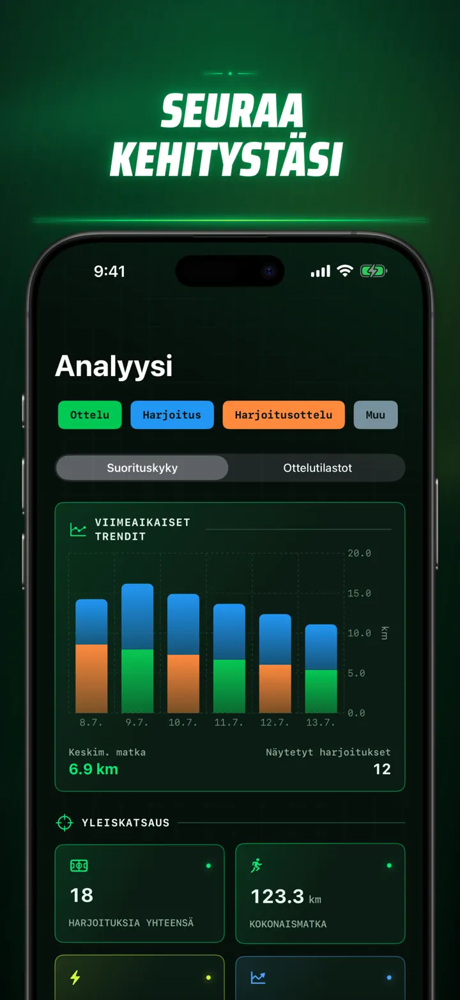
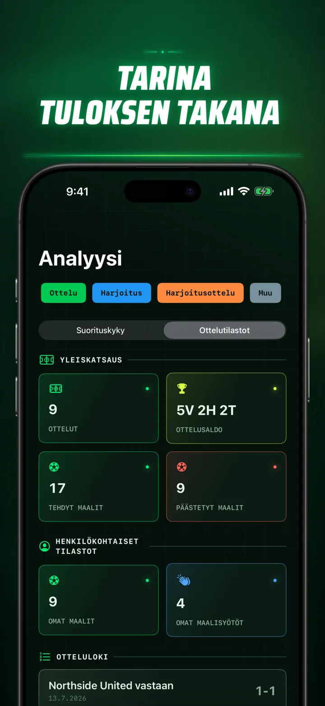
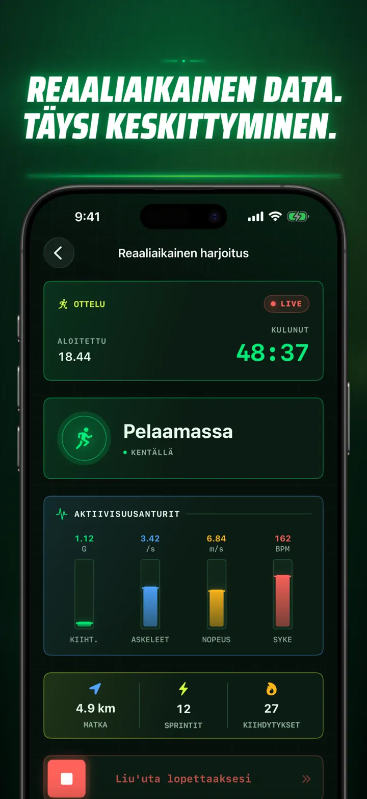
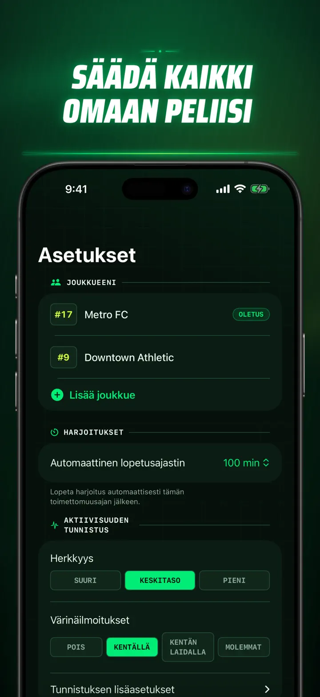
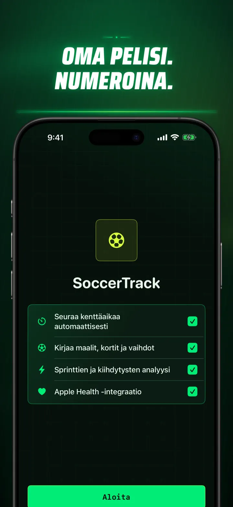

Soccer Time Track
Jalkapalloaika & analyysi
Aloita harjoitus ja pelaa. Apple Watch erottaa automaattisesti kenttä- ja vaihtopenkkiajan sekä tallentaa live-mittarit, sprintit, tapahtumat ja trendit.
Lataa App Storesta
Tietoja apista
Näe pelisi uudella tavalla.
Soccer Time Track tekee Apple Watchista otteluseurannan pelaajille, jotka haluavat ymmärtää enemmän kuin lopputuloksen. Aloita ranteesta, keskity peliin ja tarkastele sen jälkeen yksityiskohtaista kuvaa suorituksestasi iPhonessa.
AUTOMAATTINEN KENTTÄAIKA
Näe, milloin olit todella pelissä. Liike-, harjoitus- ja sijaintisignaalit auttavat erottamaan pelaamisen, vähäisen aktiivisuuden ja vaihtopenkkiajan. Saat:
- Kenttä- ja vaihtopenkkiajan
- Pelijaksot ja selkeän aikajanan
- Yksityiskohtaisen erittelyn koko harjoituksen kulusta
OTTELUPÄIVÄ RANTEESSASI
Valitse Ottelu, Harjoitus, Harjoitusottelu tai Muu. Kirjaa pelin aikana:
- Tehdyt ja päästetyt maalit
- Omat maalit ja maalisyötöt
- Keltaiset ja punaiset kortit
- Vaihdot ja jaksojen vaihtumiset
PELISI MITATTUNA
Näe minuuttien lisäksi muun muassa:
- Matka
- Keski- ja huippunopeus
- Sprintit ja kovatehoiset kiihdytykset
- Syke ja aktiiviset kalorit
- Askeltiheys ja kiihtyvyys
LIVE-DATA, TÄYSI KESKITTYMINEN
Pariliitetty iPhone voi näyttää live-mittarit samalla, kun Apple Watch jatkaa harjoituksen tallennusta. Sinä keskityt otteluun ja tiedot kertyvät taustalla.
SEURAA KEHITYSTÄSI
Kokoa ottelut, harjoitukset, harjoitusottelut ja muut suoritukset samaan historiaan. Tutki trendejä ja henkilökohtaisia ennätyksiä, vertaile suorituksia ja lisää joukkue, pelinumero, vastustaja, paikka sekä muistiinpanot jokaisen tuloksen taustaksi.
Tarvitsetko tiedot muualle? Vie harjoitukset, pelijaksot ja ottelutapahtumat CSV- tai JSON-muodossa.
TEHTY APPLE WATCHILLE JA APPLE HEALTHILLE
Luvallasi Soccer Time Track käyttää harjoitus-, syke-, liike- ja sijaintitietoja analyysien luomiseen ja tallentaa valmiit jalkapalloharjoitukset Apple Healthiin. Automaattinen seuranta vaatii Apple Watchin. Voit lisätä harjoituksen myös käsin iPhonessa.
SINUN TIETOSI, SINUN PELISI
Harjoituksesi pysyvät laitteillasi ja iCloud-synkronoinnin ollessa käytössä yksityisessä iCloud-tietokannassasi. Soccer Time Track ei vaadi tiliä, sisällä mainoksia eikä käytä kolmannen osapuolen analytiikkaa.
Älä enää arvaa, kuinka paljon pelasit. Näe, mitä teit peliajallasi.
Tietosuojakäytäntö: https://masawata.net/SoccerTimeTrack/privacy-policy.html Käyttöehdot: https://www.apple.com/legal/internet-services/itunes/dev/stdeula/
Näyttökuvat









Soccer Time Track
Aloita harjoitus ja pelaa. Apple Watch erottaa automaattisesti kenttä- ja vaihtopenkkiajan sekä tallentaa live-mittarit, sprintit, tapahtumat ja trendit.
Lataa App Storesta